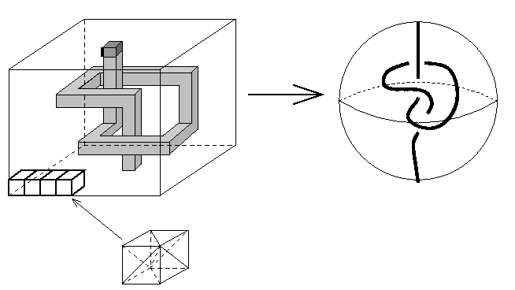

Shellableでない球体の三角形分割として有名なものの１つで、Furch
(1924)による。これは、「1辺からなる結ばったspanning arcを1次元
骨格中に持つような3次元球体の三角形分割はshellableでない」という
定理に基づいていてい、このような1辺からなる結ばったspanning arc
をうまく3次元球体の三角形分割の中に実現する構成法である。
「結ばったspanning arc」については下の右図参照。球体に含まれる
自己交差のない曲線で、その両端点が球体の境界にあるものをspanning arc
といい、絵のように結ばっているものを結ばったspanning arcと呼んでいる。

上の左図で、小さい立方体を積み上げて大きい立方体を作り、下の面から
上の面に向けて穴を掘っていく。このとき途中に結び目を作るようにする。
穴が上の面に貫通する一歩手前で止めておくと、この物体は球体と同相で
あるままになるが、このとき、同相写像で右図の球体に写すことを考えると
左図の太く書いてある1辺が右図の結ばったspanning arcになっている。
(各々の小さい立方体を図の下にあるような形で６個の単体に切り分ける
ことによって三角刑分割になる。)
ここで与えているデータはこの構成法をした上で、余分な単体を取り除く
ことで面の数を若干節約したものである。380頂点、1172ファセットを
要している。